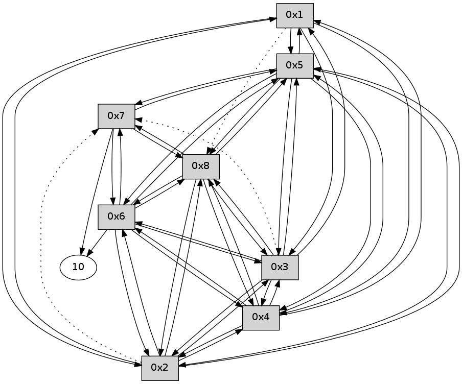

>> << IDX [start] -100 -25 -5 +0 +5 +25 +100 [110.46148181]
 Previous packets
105.004669 beacon07(11f6) #0 coord=01,02,03,04,05,06,07,08,0a,09 cycle=688.0ms assoc 64 08 db
105.014669 beacon08(11f6) #0 coord=01,02,03,04,05,06,07,08,0a,09 cycle=688.0ms assoc 64 8d 4a
105.110353 [Hello(1): seq=14 sym=5,3,2,4 asym=8 sysInfo= stat=5:12,0,0,0/3:13,0,0,0/2:11,0,0,0/4:11,0,0,0/8:13,0,0,0]
----------------------------------------------------------------------
105.732665 beacon01(11f6) #0 coord=01,02,03,04,05,06,07,08,0a,09 cycle=688.0ms assoc
-- color-indic=0 64 a4 9f
105.742837 beacon02(11f6) #0 coord=01,02,03,04,05,06,07,08,0a,09 cycle=688.0ms assoc 64 37 ae
105.752800 beacon03(11f6) #0 coord=01,02,03,04,05,06,07,08,0a,09 cycle=688.0ms assoc 64 4d e3
105.762801 beacon04(11f6) #0 coord=01,02,03,04,05,06,07,08,0a,09 cycle=688.0ms assoc 64 3a 09
105.772801 beacon05(11f6) #0 coord=01,02,03,04,05,06,07,08,0a,09 cycle=688.0ms assoc 64 40 44
105.782803 beacon06(11f6) #0 coord=01,02,03,04,05,06,07,08,0a,09 cycle=688.0ms assoc 64 ce 93
105.792802 beacon07(11f6) #0 coord=01,02,03,04,05,06,07,08,0a,09 cycle=688.0ms assoc 64 b4 de
105.802806 beacon08(11f6) #0 coord=01,02,03,04,05,06,07,08,0a,09 cycle=688.0ms assoc 64 31 4f
105.854286 [Hello(8): seq=14 sym=2,7,5,6,3,4 sysInfo= stat=2:12,0,0,0/7:12,0,0,0/5:12,0,0,0/6:13,0,0,0/3:12,0,0,0/4:12,0,0,0]
105.867005 [Hello(7): seq=14 sym=10,5,6,8 sysInfo= stat=10:13,0,0,0/5:12,0,0,0/6:13,0,0,0/8:14,0,0,0]
105.889347 [Hello(3): seq=14 sym=1,2,5,6,8,4 asym=7 sysInfo= stat=1:14,0,0,0/2:12,0,0,0/5:12,0,0,0/6:12,0,0,0/8:14,0,0,0/4:13,0,0,0/7:13,0,0,0]
105.894336 [Hello(4): seq=14 sym=1,2,5,6,3,8 sysInfo= stat=1:14,0,0,0/2:12,0,0,0/5:12,0,0,0/6:12,0,0,0/3:14,0,0,0/8:14,0,0,0]
105.915039 [Hello(5): seq=14 sym=1,2,7,6,3,8,4 sysInfo= stat=1:14,0,0,0/2:12,0,0,0/7:13,0,0,0/6:12,0,0,0/3:14,0,0,0/8:14,0,0,0/4:13,0,0,0]
105.954672 [Hello(6): seq=14 sym=10,7,5,3,8,4,2 sysInfo= stat=10:13,0,0,0/7:14,0,0,0/5:12,0,0,0/3:13,0,0,0/8:14,0,0,0/4:13,0,0,0/2:7,0,0,0]
105.982078 [Hello(2): seq=14 sym=1,5,3,8,4,6 asym=7 sysInfo= stat=1:14,0,0,0/5:13,0,0,0/3:14,0,0,0/8:14,0,0,0/4:13,0,0,0/6:11,0,0,0/7:13,0,0,0]
----------------------------------------------------------------------
106.520802 beacon01(11f6) #0 coord=01,02,03,04,05,06,07,08,0a,09 cycle=688.0ms assoc
-- color-indic=0 64 60 91
106.530979 beacon02(11f6) #0 coord=01,02,03,04,05,06,07,08,0a,09 cycle=688.0ms assoc 64 f3 a0
106.540938 beacon03(11f6) #0 coord=01,02,03,04,05,06,07,08,0a,09 cycle=688.0ms assoc 64 89 ed
106.550939 beacon04(11f6) #0 coord=01,02,03,04,05,06,07,08,0a,09 cycle=688.0ms assoc 64 fe 07
106.560939 beacon05(11f6) #0 coord=01,02,03,04,05,06,07,08,0a,09 cycle=688.0ms assoc 64 84 4a
106.570939 beacon06(11f6) #0 coord=01,02,03,04,05,06,07,08,0a,09 cycle=688.0ms assoc 64 0a 9d
106.580939 beacon07(11f6) #0 coord=01,02,03,04,05,06,07,08,0a,09 cycle=688.0ms assoc 64 70 d0
106.590943 beacon08(11f6) #0 coord=01,02,03,04,05,06,07,08,0a,09 cycle=688.0ms assoc 64 f5 41
106.697036 [Hello(1): seq=15 sym=5,3,2,4 asym=8 sysInfo= stat=5:13,0,0,0/3:14,0,0,0/2:12,0,0,0/4:12,0,0,0/8:14,0,0,0]
----------------------------------------------------------------------
107.308938 beacon01(11f6) #0 coord=01,02,03,04,05,06,07,08,0a,09 cycle=688.0ms assoc
-- color-indic=0 64 dc 94
107.319105 beacon02(11f6) #0 coord=01,02,03,04,05,06,07,08,0a,09 cycle=688.0ms assoc 64 4f a5
107.329073 beacon03(11f6) #0 coord=01,02,03,04,05,06,07,08,0a,09 cycle=688.0ms assoc 64 35 e8
107.339074 beacon04(11f6) #0 coord=01,02,03,04,05,06,07,08,0a,09 cycle=688.0ms assoc 64 42 02
107.349074 beacon05(11f6) #0 coord=01,02,03,04,05,06,07,08,0a,09 cycle=688.0ms assoc 64 38 4f
107.359073 beacon06(11f6) #0 coord=01,02,03,04,05,06,07,08,0a,09 cycle=688.0ms assoc 64 b6 98
107.369075 beacon07(11f6) #0 coord=01,02,03,04,05,06,07,08,0a,09 cycle=688.0ms assoc 64 cc d5
107.379078 beacon08(11f6) #0 coord=01,02,03,04,05,06,07,08,0a,09 cycle=688.0ms assoc 64 49 44
107.414310 [Hello(3): seq=15 sym=1,2,5,6,8,4 asym=7 sysInfo= stat=1:15,0,0,0/2:13,0,0,0/5:13,0,0,0/6:13,0,0,0/8:14,0,0,0/4:14,0,0,0/7:13,0,0,0]
107.448228 [Hello(5): seq=15 sym=1,2,7,6,3,8,4 sysInfo= stat=1:15,0,0,0/2:13,0,0,0/7:13,0,0,0/6:13,0,0,0/3:15,0,0,0/8:14,0,0,0/4:13,0,0,0]
107.482927 [Hello(4): seq=15 sym=1,2,5,6,3,8 sysInfo= stat=1:15,0,0,0/2:13,0,0,0/5:14,0,0,0/6:13,0,0,0/3:15,0,0,0/8:14,0,0,0]
107.489256 [Hello(6): seq=15 sym=10,7,5,3,8,4,2 sysInfo= stat=10:14,0,0,0/7:14,0,0,0/5:13,0,0,0/3:14,0,0,0/8:14,0,0,0/4:14,0,0,0/2:7,0,0,0]
107.510663 [Hello(2): seq=15 sym=1,5,3,8,4,6 asym=7 sysInfo= stat=1:15,0,0,0/5:14,0,0,0/3:15,0,0,0/8:14,0,0,0/4:14,0,0,0/6:12,0,0,0/7:13,0,0,0]
107.528200 [Hello(7): seq=15 sym=10,5,6,8 sysInfo= stat=10:14,0,0,0/5:14,0,0,0/6:15,0,0,0/8:14,0,0,0]
107.558262 [Hello(8): seq=15 sym=2,7,5,6,3,4 sysInfo= stat=2:14,0,0,0/7:14,0,0,0/5:14,0,0,0/6:15,0,0,0/3:14,0,0,0/4:14,0,0,0]
----------------------------------------------------------------------
108.097073 beacon01(11f6) #0 coord=01,02,03,04,05,06,07,08,0a,09 cycle=688.0ms assoc
-- color-indic=0 64 c8 fa
108.107235 beacon02(11f6) #0 coord=01,02,03,04,05,06,07,08,0a,09 cycle=688.0ms assoc 64 5b cb
108.117208 beacon03(11f6) #0 coord=01,02,03,04,05,06,07,08,0a,09 cycle=688.0ms assoc 64 21 86
108.127208 beacon04(11f6) #0 coord=01,02,03,04,05,06,07,08,0a,09 cycle=688.0ms assoc 64 56 6c
108.137208 beacon05(11f6) #0 coord=01,02,03,04,05,06,07,08,0a,09 cycle=688.0ms assoc 64 2c 21
108.147209 beacon06(11f6) #0 coord=01,02,03,04,05,06,07,08,0a,09 cycle=688.0ms assoc 64 a2 f6
108.157210 beacon07(11f6) #0 coord=01,02,03,04,05,06,07,08,0a,09 cycle=688.0ms assoc 64 d8 bb
108.167213 beacon08(11f6) #0 coord=01,02,03,04,05,06,07,08,0a,09 cycle=688.0ms assoc 64 5d 2a
108.222597 [Hello(1): seq=16 sym=5,3,2,4 asym=8 sysInfo= stat=5:14,0,0,0/3:15,0,0,0/2:13,0,0,0/4:13,0,0,0/8:15,0,0,0]
----------------------------------------------------------------------
108.885211 beacon01(11f6) #0 coord=01,02,03,04,05,06,07,08,0a,09 cycle=688.0ms assoc
-- color-indic=0 64 74 ff
108.895369 beacon02(11f6) #0 coord=01,02,03,04,05,06,07,08,0a,09 cycle=688.0ms assoc 64 e7 ce
108.905346 beacon03(11f6) #0 coord=01,02,03,04,05,06,07,08,0a,09 cycle=688.0ms assoc 64 9d 83
108.915346 beacon04(11f6) #0 coord=01,02,03,04,05,06,07,08,0a,09 cycle=688.0ms assoc 64 ea 69
108.925346 beacon05(11f6) #0 coord=01,02,03,04,05,06,07,08,0a,09 cycle=688.0ms assoc 64 90 24
108.935346 beacon06(11f6) #0 coord=01,02,03,04,05,06,07,08,0a,09 cycle=688.0ms assoc 64 1e f3
108.945347 beacon07(11f6) #0 coord=01,02,03,04,05,06,07,08,0a,09 cycle=688.0ms assoc 64 64 be
108.955351 beacon08(11f6) #0 coord=01,02,03,04,05,06,07,08,0a,09 cycle=688.0ms assoc 64 e1 2f
108.990240 [Hello(6): seq=16 sym=10,7,5,3,8,4,2 sysInfo= stat=10:14,0,0,0/7:15,0,0,0/5:13,0,0,0/3:14,0,0,0/8:15,0,0,0/4:14,0,0,0/2:8,0,0,0]
109.015171 [Hello(4): seq=16 sym=1,2,5,6,3,8 sysInfo= stat=1:0,0,0,0/2:14,0,0,0/5:14,0,0,0/6:15,0,0,0/3:15,0,0,0/8:15,0,0,0]
109.028645 [Hello(2): seq=16 sym=1,5,3,8,4,6 asym=7 sysInfo= stat=1:0,0,0,0/5:14,0,0,0/3:15,0,0,0/8:15,0,0,0/4:15,0,0,0/6:13,0,0,0/7:14,0,0,0]
109.089543 [Hello(8): seq=16 sym=2,7,5,6,3,4 sysInfo= stat=2:15,0,0,0/7:14,0,0,0/5:14,0,0,0/6:0,0,0,0/3:14,0,0,0/4:15,0,0,0]
109.107893 [Hello(3): seq=16 sym=1,2,5,6,8,4 asym=7 sysInfo= stat=1:0,0,0,0/2:15,0,0,0/5:14,0,0,0/6:15,0,0,0/8:0,0,0,0/4:0,0,0,0/7:14,0,0,0]
109.121919 [Hello(5): seq=16 sym=1,2,7,6,3,8,4 sysInfo= stat=1:0,0,0,0/2:15,0,0,0/7:14,0,0,0/6:15,0,0,0/3:0,0,0,0/8:0,0,0,0/4:15,0,0,0]
----------------------------------------------------------------------
109.673347 beacon01(11f6) #0 coord=01,02,03,04,05,06,07,08,0a,09 cycle=688.0ms assoc
-- color-indic=0 64 b0 f1
109.683524 beacon02(11f6) #0 coord=01,02,03,04,05,06,07,08,0a,09 cycle=688.0ms assoc 64 23 c0
109.693482 beacon03(11f6) #0 coord=01,02,03,04,05,06,07,08,0a,09 cycle=688.0ms assoc 64 59 8d
109.703482 beacon04(11f6) #0 coord=01,02,03,04,05,06,07,08,0a,09 cycle=688.0ms assoc 64 2e 67
109.713484 beacon05(11f6) #0 coord=01,02,03,04,05,06,07,08,0a,09 cycle=688.0ms assoc 64 54 2a
109.723484 beacon06(11f6) #0 coord=01,02,03,04,05,06,07,08,0a,09 cycle=688.0ms assoc 64 da fd
109.733483 beacon07(11f6) #0 coord=01,02,03,04,05,06,07,08,0a,09 cycle=688.0ms assoc 64 a0 b0
109.743487 beacon08(11f6) #0 coord=01,02,03,04,05,06,07,08,0a,09 cycle=688.0ms assoc 64 25 21
109.893161 [Hello(1): seq=17 sym=5,3,2,4 asym=8 sysInfo= stat=5:15,0,0,0/3:0,0,0,0/2:14,0,0,0/4:14,0,0,0/8:0,0,0,0]